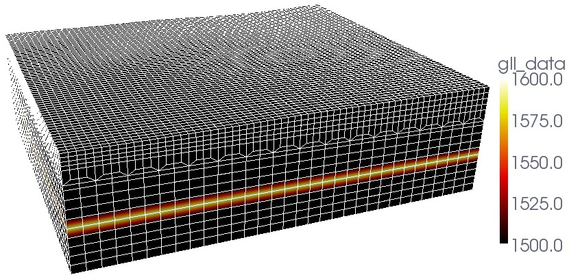

Table of Contents
Troubleshooting
FAQ
configuration fails:
Examine the log file ’config.log’. It contains detailed informations. In many cases, the paths to these specific compiler commands F90, CC and MPIF90 will not be correct if `./configure` fails.
Please make sure that you have a working installation of a Fortran compiler, a C compiler and an MPI implementation. You should be able to compile this little program code:
program main
include 'mpif.h'
integer, parameter :: CUSTOM_MPI_TYPE = MPI_REAL
integer ier
call MPI_INIT(ier)
call MPI_BARRIER(MPI_COMM_WORLD,ier)
call MPI_FINALIZE(ier)
end
compilation fails stating:
…
obj/program_generate_databases.o: In function MAIN__':
program_generate_databases.f90:(.text+0x14): undefined reference to _gfortran_set_std’
…
Make sure you’re pointing to the right ’mpif90’ wrapper command.
Normally, this message will appear when you are mixing two different Fortran compilers. That is, using e.g. gfortran to compile non-MPI files and mpif90, wrapper provided for e.g. ifort, to compile MPI-files.
fix: e.g. specify > ./configure FC=gfortran MPIF90=/usr/local/openmpi-gfortran/bin/mpif90
after executing xmeshfem3D I’ve got elements with skewness of 81% percent, what does this mean:
Look at the skewness table printed in the output_mesher.txt file after executing xmeshfem3D for the example given in EXAMPLES/meshfem3D_examples/simple_model/:
...
histogram of skewness (0. good - 1. bad):
0.0000000E+00 - 5.0000001E-02 27648 81.81818 %
5.0000001E-02 - 0.1000000 0 0.0000000E+00 %
...
The first line means that you have 27,648 elements with a skewness value between 0 and 0.05 (which means the element is basically not skewed, just plain regular hexahedral element). The total number of elements you have in this mesh is (see in the output_mesher.txt file a bit further down):
...
total number of elements in entire mesh: 33792
...
which gives you that: 27,648 / 33,792 (\sim) 81.8 % of all elements are not skewed, i.e. regular elements. a fantastic value :)
The histogram lists for this mesh also some stronger skewed elements, for example the worst ones belong to:
...
0.6000000 - 0.6500000 2048 6.060606 %
...
about 6 % of all elements have distortions with a skewness value between 0.6 and 0.65. The skewness values give you a hint of how good your mesh is. In an ideal world, you would want to have no distortions, just like the 81% from above. Those elements give you the best approximate values by the GLL quadrature used in the spectral-element method. However, having weakly distorted elements is still fine and the solutions are still accurate enough. So empirically, values up to around 0.7 are tolerable, above that you should consider remeshing…
To give you an idea why some of the elements are distorted, see the following figure [fig:mesh.vp] of the mesh you obtain in the example EXAMPLES/meshfem3D_examples/simple_model/.

You will see that the mesh contains a doubling layer, where we stitch elements together such that the size of two elements will transition to the size of one element (very useful to keep the ratio of wavespeed / element_size about constant). Those elements in this doubling layer have higher skewness values and make up those 6 % in the histogram.
the code gives following error message “need at least one receiver”:
This means that no stations given in the input file DATA/STATIONS could be located within the dimensions of the mesh. This can happen for example when the mesh was created with the in-house mesher xmeshfem3D while using the Universal Transverse Mercator (UTM) projection but the simulation with xspecfem3D was suppressing this projection from latitude/longitude to x/y/z coordinates.
In such cases, try to change your DATA/Par_file and set e.g.:
SUPPRESS_UTM_PROJECTION = .false.
to be the same in Mesh_Par_file and Par_file. This flag should be identical when using the in-house mesher xmeshfem3D, xgenerate_databases and xspecfem3D together to run simulations.
The flag determines if the coordinates you specify for your source and station locations are given as lat/lon degrees and must be converted to UTM coordinates. As an example, if you use .false. within Mesh_Par_file then you create a mesh with xmeshfem3D using the UTM projection from lat/lon as input format to UTM projected coordinates to store the mesh point positions, which is fine. The error then may occur if in the Par_file you have this set to .true. so that the xgenerate_databases and xspecfem3D suppress the UTM projection and assume that all coordinates you use now for source and receiver locations are given in meters (that is, converted) already. So it won’t find the specified locations in the used mesh. As a solutions, just change the flag in Par_file to be the same as in Mesh_Par_file and rerun xgenerate_databases and xspecfem3D to make sure that your simulation works fine.
I get the following error message “forward simulation became unstable and blew up”:
In most cases this means that your time step size DT is chosen too big. Look at your files output_mesher.txt or output_solver.txt created in the folder OUTPUT_FILES. In these output files, find the section:
...
*********************************************
*** Verification of simulation parameters ***
*********************************************
...
*** Minimum period resolved = 4.308774
*** Maximum suggested time step = 6.8863556E-02
...
then change DT in the DATA/Par_file to be somewhere close to the maximum suggested time step. In the example above:
DT = 0.05d0
would (most probably) work fine. It could be also bigger than the 0.068 s suggested. This depends a bit on the distortions of your mesh elements. The more regular they are, the bigger you can choose DT. Just play with this value a bit and see when the simulation becomes stable …
This documentation has been automatically generated by pandoc based on the User manual (LaTeX version) in folder doc/USER_MANUAL/ (Mar 10, 2020)